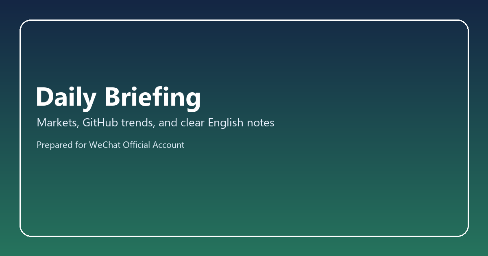
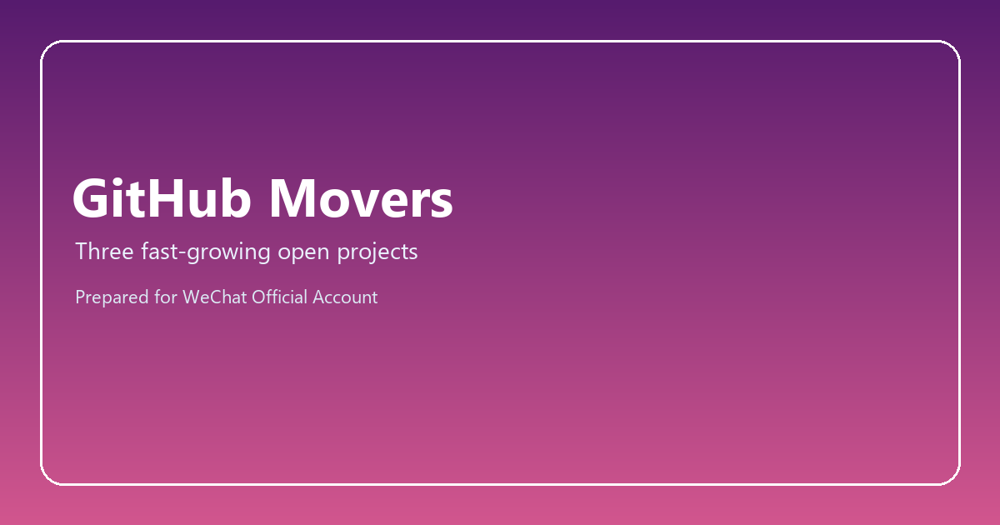

Markets, GitHub Trends, and Clear English Notes
This issue brings together the market moves people talked about today, three fast-growing GitHub projects, and a small language section that explains harder words in plain English.
1. Market Snapshot
USD/JPY: 151.24 (+0.62, +0.41%)
The yen weakened as rate-differential worries stayed in focus and risk appetite remained steady.
Source: yfinance / JPY=X
S&P 500: 5268.41 (+31.85, +0.61%)
US stocks rebounded as large-cap technology names recovered and inflation expectations cooled a little.
Source: yfinance / ^GSPC
Hang Seng: 16788.55 (-142.90, -0.84%)
Hong Kong equities slipped as China growth signals stayed mixed and platform sentiment softened.
Source: yfinance / ^HSI
CSI 300: 3542.18 (+12.34, +0.35%)
Mainland blue chips edged higher as policy support hopes offset uneven sector rotation.
Source: yfinance / 000300.SS
Market Terms In Plain English
Hang Seng: A major stock index for large Hong Kong companies.
Risk appetite: How willing investors are to buy riskier assets.
Edged higher: Increased by a small amount.

2. Fastest Growing GitHub Projects
These projects were selected from keywords like AI Agent, OpenSource, and Self-hosted, then ranked by local 24-hour star snapshot growth.
1. example/agent-orchestrator · 12,430 stars (+280)
Matched keywords: AI Agent
A framework for multi-agent orchestration, workflow routing, and production-ready tool calling.
2. example/self-hosted-rag · 9,180 stars (+190)
Matched keywords: Self-hosted
A self-hosted retrieval stack for private documents with embeddings, indexing, and local inference.
3. example/oss-autopilot · 8,015 stars (+140)
Matched keywords: OpenSource
An open-source automation runtime that schedules jobs, tracks telemetry, and exposes deployment recipes.
3. Language Boost
This section keeps the harder words, but explains them in simple English so the article still feels readable.
orchestration
Orchestration means coordinating many moving parts so they work together in the right order.
retrieval
Retrieval means finding useful stored information and bringing it back when needed.
Grammar note: by + verb-ing
This pattern explains the method. It answers the question: how does it happen?